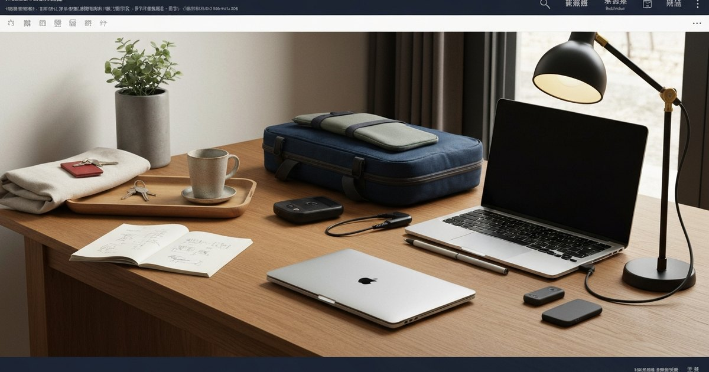

一個人也有儀式感：創業者的獨居日常整理清單
獨居創業者的生活儀式感，不是把早晨例程拍照上傳，而是用物理與時間的結構，讓住家同時是基地與歸屬。這份清單幫你把儀式寫進動線，不再只靠意志力支撐每一天。

為什麼獨居創業者比多數人更需要儀式感
儀式感的核心功能不是讓生活看起來有質感，而是在不穩定的節奏裡建立可預期的結構。傳統白領的通勤、會議、午餐與下班時間，已經替多數人畫好了每天的輪廓；但創業者——尤其是soho族與遠端工作者——幾乎每一天都在自己設計自己的節奏。沒有外部約束的時候，意志力會快速消耗，而一個設計良好的儀式，可以把意志力從「決定要不要做」轉移到「只是執行」這件事上。
獨居的影響更深一層：當家裡只有你一個人，就沒有任何人會提醒你「該吃飯了」或「今天早點休息」。住處的每一個細節，都在持續回應一個問題：這是一個讓我安心工作的地方，還是一個讓我願意回來休息的地方？多數獨居創業者的答案是「兩者都是」，但代價是兩者都做不好。儀式感的建立，其實是透過物理設計與時間設計，把「基地」與「歸屬」這兩個功能，儘可能在同一天裡分開實踐。
- 儀式不是表演，是用結構降低決策疲勞
- 獨居少了外部節奏，更需要內建於空間與時間的設計
- 儀式感的最終目標是：白天高效、晚上修復，而非兩者同時模糊
早晨儀式：設計一個讓大腦啟動的黃金十分鐘
多數人在醒來後的十五分鐘，已經開始處理郵件、確認訊息、打開工作視窗。這段時間其實是設定一天情緒基底的關鍵窗口，但多數人把它讓給了手機通知。早晨儀式的設計原則很簡單：在任何工作訊息進來之前，先完成一個「讓自己感受到當下」的動作。這個動作不需要很長，十到十五分鐘足以。
具體的內容反而次要，重要的是它必須同時滿足三個條件：第一，有一個視覺或嗅覺的愉悅信號——比如光線、咖啡香或植物的綠；第二，有一個物理性的動作——起身、倒水、坐下，不是躺著滑手機；第三，有一個很小的完成感——即便是整理床鋪或擦乾洗手台的水漬，都算。這個組合的原理是：早晨的前幾個動作會設定大腦的預設模式，讓它傾向專注或平靜，而不是立即進入反應模式。
Elite Fashion 編輯團隊在整理多位長時間在家工作者的回饋後發現，最容易持續的早晨儀式往往具備一個共同特徵：它們都是「雙手有事做」的動作。雙手拿著咖啡走到窗邊、擦乾廚房水槽、把前一晚的衣服折好放進洗衣籃——這些看似瑣碎的小動作，其實在替大腦執行一個重要的切換：從夜間模式進入日間模式。
- 起床後前十五分鐘不回工作訊息，用光線、氣味與雙手動作啟動大腦
- 儀式時長控制在十分鐘左右，太長會因為時間壓力而放棄
- 選擇可完成的物理動作，而非需要動用意志力閱讀或思考的任務
工作啟動與結束的物理信號：把住家切換成雙模式
在傳統辦公室，上班與下班有明確的物理邊界——打卡、走出大樓、通勤。這段時間不是浪費，它是大腦重新校準的緩衝。獨居創業者的問題是，幾乎所有事情都發生在同一個空間裡，因此大腦很難區分「現在是工作模式」還是「現在是休息模式」。解决方法是透過物理信號，替這兩種模式建立可識別的邊界。
工作啟動信號可以是一個固定儀式：打開筆電前，先把杯子倒滿水、把椅子拉到桌前、把一個特定的播放清單打開。連續執行三天之後，大腦會開始把這組動作與「開始工作」連結起來。結束信號則更關鍵——它決定了你能不能真正從工作中抽離。一個有效的做法是：每天固定一個時間點，做一件與工作完全無關的物理動作，然後把筆電闔上、或者把工作用的桌子用布蓋住。這個動作不需要很戲劇性，重點在於重複——讓大腦學會在聽到、看到或做到這件事的時候，就自動切換頻道。
編輯部特別提醒：很多創業者的失敗點不是「不知道要做什麼」，而是「以為自己可以靠意志力區分工作與休息」。在一個空間裡，視覺提示比時間提示更有效。把工作用的筆電放在一個固定的布盒或收納箱裡，用的時候拿出來，用完收進去——這個物理動作比任何時間管理App更能幫你建立邊界。
- 工作開始前用固定儀式（三個動作以內）建立啟動信號
- 每天設定一個硬性的「工作結束儀式」，物理性關閉工作模式
- 把工作設備從視覺主場移除，讓居住空間恢復為休息空間
晚間儀式：讓身體知道今天已經結束
獨居創業者最常見的晚上失調模式是這樣的：工作到一個段落，然後說「我再回幾封信就好」，然後不知不覺就到了十一點、十二點。沒有同事的「明天見」或下班後的餐廳約會，工作與個人時間之間的這條線，就這樣被悄悄擦掉。晚間儀式的核心功能，是透過一個具體的結束動作，讓身體知道「今天的工作已經完成，可以進入修復模式」。
一個有效的晚間儀式組合，通常包含三個層面：清理、物理與過渡。清理不是大掃除，而是把今天的工作殘餘收乾淨——清空工作桌面、倒掉杯子的水、把明天的咖啡豆先量好。物理層面則是讓身體降溫：關掉工作區的燈、打開臥室的燈、把室溫往下調半度。過渡則是一個心理上的儀式——可以是寫三行當日日記、翻幾頁書、或者在客廳坐五分鐘不做事。這個五分鐘看起來浪費，但它的功能是讓大腦有時間把「今天」這件事做一個正式的存檔，而不是帶著一堆未完成的念頭直接入睡。
Elite Fashion 編輯團隊在整理讀者回饋時注意到一個普遍現象：很多人覺得自己「睡眠品質差」，但問題其實不在就寢時刻，而在於睡前沒有建立一個有效的認知結束信號。當大腦認為「今天的工作還沒有真正結束」的時候，即便身體躺下了，交感神經仍然會維持警戒狀態，影響入睡與深層睡眠的品質。晚間儀式不需要很完整，但需要有一個清晰的「今天到此為止」的信號。
- 晚間儀式由三個層次構成：清理（工作殘餘收乾淨）、物理（燈光與溫度）、過渡（什麼都不做的五分鐘）
- 睡前一小時避免工作郵件與訊息，讓大腦有認知上的結束
- 盡量在固定時間執行晚間儀式，讓身體建立生理時鐘預期
每週一次的生活 Reset：讓獨居空間持續承載能量
日常儀式解決的是每天的結構問題，但獨居空間還需要一個每週維護的機制，確保這個地方不會在忙碌中被掏空。多數創業者在週間把焦點放在工作上，到了週末才發現家裡已經累積了「忙到沒時間整理」的痕跡——這個時候要重新啟動一個乾淨、有能量感的空間，往往需要好幾個小時，而很多人選擇繞過去，繼續活在混亂裡。
一個比較現實的每週 Reset 框架，不是一次性的大掃除，而是把任務分散到不同時段。週六早上花三十分鐘做一件事：把前一週的「工作痕跡」全部清除——清空桌面、處理堆積的紙張、把沒洗的杯子洗乾淨。這不是深度打掃，只是把空間恢復到「可以正常運作」的基準線。週日晚上則可以做一個稍微不同的事情：計畫下一週的三件重點任務，並把它們寫在一張紙上，放在工作區的固定位置。這個動作的隱含功能是：讓大腦知道下一週有什麼在等著它，而不是帶著模糊焦慮進入下一週。
編輯部建議把每週 Reset 視為一種「空間的投資」，而不是「打掃的義務」。當空間維持在一個基本舒適的狀態，你每天的工作啟動儀式就會更順暢、晚間儀式也更有效。這是一個正向循環——平時花十分鐘維持，遠比週末花兩小時補救，更能節省整體的心力資源。
- 週六早上用三十分鐘清除上一週的工作痕跡，不需要深度打掃，只要恢復基本秩序
- 週日晚上寫下下一週的三件優先任務，放在工作區固定位置
- 每月的「空間審視」：評估哪個角落讓你感到壓力或無力，重新調整該區域的機能
儀式的持久關鍵：不是設計一套最完美的系統，而是設計一套你不會放棄的系統
所有儀式系統最脆弱的時刻，不是在設計階段，而是在第二週與第三週之間。剛開始執行時，動機充足，任何流程都能堅持。但當行程開始出現例外——今天有客戶緊急需求、明天搬家、後天突然需要出差——之前建立起來的儀式感就會斷裂，而多數人的反應是「算了，反正已經破了，從頭開始太麻煩」。
一個更務實的做法，是在設計儀式之初就先想好「例外處理」機制。原則很簡單：儀式可以縮減，但不能歸零。早晨儀式原本有五個步驟，出門前的早晨可以簡化成兩個——但仍然要執行那兩個。晚間儀式原本需要半小時，累了可以縮短成十分鐘——但仍然要有一個「今天結束」的明確信號。這種「儀式縮減而非取消」的框架，能讓你在忙碌或低能量的日子裡，仍然維持基本的結構感，而不需要每次都從零重建。
Elite Fashion 編輯團隊在訪問多位長期在家工作者後，觀察到一個規律：能夠持續執行儀式的人，往往不是意志力更強的人，而是比較會「原諒自己但不取消行動」的人。儀式感的核心不是完美執行，而是重複性——即便每次都只做到六十分，累積下來仍然會讓生活品質產生可測量的差異。真正重要的不是每天都做到九十分，而是這套系統能在未來三年仍然被你使用，而不是三週後就被放棄。
- 例外時，儀式縮減到兩個核心動作，不歸零
- 選擇可持續的形式，而非最完美的形式
- 持續三年的六十分系統，贏過只執行三個月的九十分系統
FAQ
獨居創業者的工作儀式跟一般白領有什麼不同？
最大差異在於「分界的強度」。上班族有通勤實體通勤與同事的存在，工作與生活的切換有物理與社會的邊界。但獨居創業者幾乎所有時間都在同一個空間，沒有外部結構幫你畫線。因此儀式設計必須更刻意——透過物理信號（設備歸位、燈光切換）、時間訊號（固定結束時間）與動作訊號（固定儀式）三重疊加，才能在工作與生活之間建立有效的切換。
早晨儀式需要多長的時間才有效？
實證研究與多位長時間在家工作者的回饋都指出，十到十五分鐘是最有效率的區間。太短的儀式（例如三分鐘）不足以建立認知切換，太長的儀式則會因為時間壓力而難以持續。重點不是時長，而是這段時間內有沒有同時滿足三個條件：視覺或嗅覺的愉悅信號、物理性的動作，以及一個很小的完成感。滿足這三個條件，即便只有十分鐘，大腦也能有效進入日間模式。
如果經常加班到很晚，晚間儀式還有必要嗎？
越是忙碌的時期，越需要一個最低限度的結束儀式。這裡的關鍵字是「簡化而非取消」：即便是凌晨十二點才結束工作，仍然可以在躺下前做一件具體的事——把明天的咖啡豆先拿出來倒好、把工作筆電放進收納箱裡、寫三行當天的感想。這些動作不需要很長時間，但它們的功能是替大腦執行一個「今天的工作已經結束」的存檔，否則即便睡著了，大腦仍然會維持低度的警戒狀態，影響睡眠品質與隔天的專注效率。
儀式感與過度儀式化有什麼界線？
一個簡單的判斷方式是：這個儀式是幫你節省心力，還是消耗心力？好的儀式會隨著重複執行而愈來愈自動化，你不需要每次都「決定」要不要做，而是它自然會發生。如果發現自己開始對儀式本身感到壓力、焦慮或時間計算的疲憊，那可能是過度儀式化的訊號。適度退讓、接受幾天沒有儀式的日子，然後用一個很小的動作重新啟動，比堅持完美執行更符合可持續的原則。
下一步建議
如果你正在評估是否要獨居，或者已經獨居但仍在尋找生活節奏，歡迎繼續閱讀我們關於一人生活的系列文章，從財務、健康到社交重建，提供更完整的決策參考。
重要警語
本文僅供一般生活資訊與自我整理參考，不構成醫療、法律、投資、稅務、保險或財務建議。涉及個人健康、財務或居住安排，請依自身情況諮詢合格專業人士。